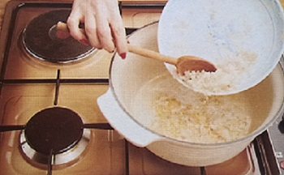
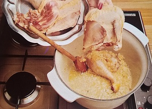
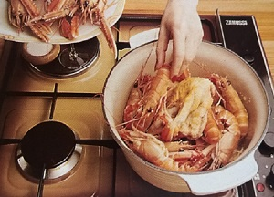
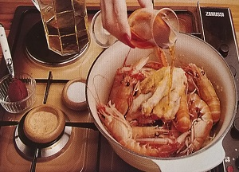
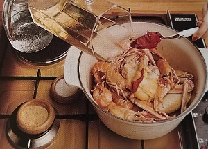
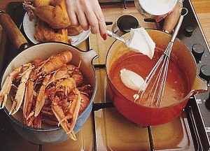

This recipe is an original and succulent version of the much-celebrated poulet aux langoustines
(chicken with langoustine) that entered the haut-cuisine hall of fame in the seventeenth century...
...This is is most happy bird, escorted as it is by elegant langoustine, and its gaiety will only be
enhanced by a Saint-Péray, a Côte du Rhône, which assures the harmony of this wedding of
fowl and crustacean.
preparation time: 50 minutes
difficulty: easy
serves: 4
Ingredients:
1. step
Peel the shallots and chop them finely. Brown until golden
in a heavy pan containing 1 tbsp butter.
2. step
Quarter the chicken and add it to the shallots. Salt and
pepper lightly.
3. step
Add the langoustine to the pan and let them sweat for a
short time.
4. step
Pour in cognac and flambé thoroughly. Salt and pepper and
sprinkle in a pinch of cayenne.
5. step
Incorporate the tomato paste. Pour on the white wineand
bring to a boil. Add 200 ml water and cook for 15 minutes.
Remove the langoustine from the pan and set aside. Leave
the chicken to cook another 15 minutes.
6. step
Remove the chicken, strain the cooking juices through a
fine sieve, and return them to the pan. Add crème fraîche,
whisk until smooth, and reduce briefly. When ready
to serve, incorporate the rest of the butter, adjust the
seasoning if necessary, and serve the chicken accompanied
by the langoustine.
odvoji tabelu!
| kcal | fat | saturates | carbs | sugars | fibre | protein | salt |
|---|---|---|---|---|---|---|---|
| 675 | 16g | 15g | 10g | 5g | 3g | 45g | 7g |
Bon Appetite!